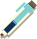

Rue Louis Dubreuil
76000 Rouen
&
Rue Montgallet
75012 Paris
Développeur front
21 ans, en couple.
J'ai toujours été proche de la technologie, notamment des consoles et ordinateurs.Après avoir cherché ce qui pouvait me plaire le plus, j'ai été séduit par le web et la création de sites. Savoir que ce dont je créé impacte la vie des gens est un superbe sentiment. De bout en bout, penser et créer un site est pour moi un atout à mettre au service de clients aujourd'hui.
créativité
Rédaction
Esprit d'équipe
1 mois - téléconseiller
Voxens
Mai à Juin 2021
Alternance statut étudiant
De octobre 2021 à aujourd'hui
Cesi Rouen
Développeur web
2020 à 2021
Nfactory School
Baccalauréat S spécialité ISN
Juin 2018
Lycée Pierre Corneille Rouen